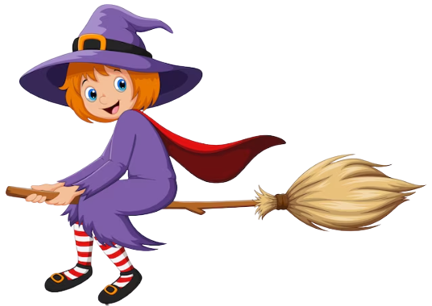

About us
Dear wizards and witches....
Welcome to Hogwarts School of Witchcraft and Wizardry, the premier institution for magical education since
its founding in the 10th century. Nestled amidst the picturesque Scottish Highlands, Hogwarts stands as a beacon
of magical excellence, providing a safe haven for young witches and wizards to cultivate their talents,
expand their knowledge, and embrace the wonders of the magical world.
At Hogwarts, tradition meets innovation as we strive to uphold the highest standards of magical education.
Our esteemed faculty, comprised of accomplished witches and wizards, are dedicated to nurturing the potential
within each student. With a diverse and comprehensive curriculum, students are exposed to a wide array of magical
disciplines, including Potions, Transfiguration, Charms, Defense Against the Dark Arts, and many.